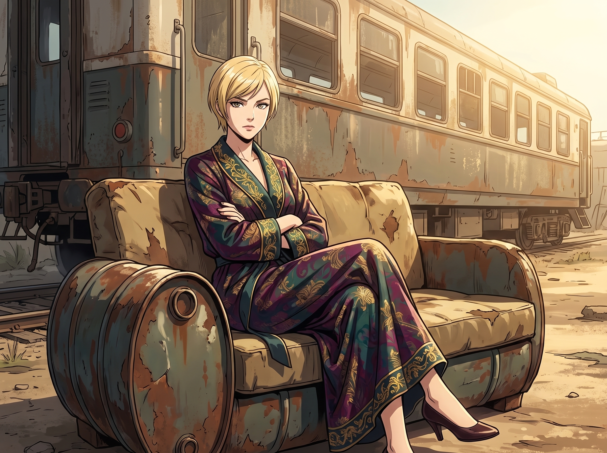

大師課

一輛擦得一塵不染的黑色凱迪拉克 Escalade 緩緩駛入奧林匹亞半島的泥濘林道，最終停在二號車廂那充滿廢土龐克風格的營地前。車門打開，走下來的不是什麼尋仇的黑幫，而是西雅圖某家跨國物流巨頭的首席合規官與法務副總裁。
他們滿頭大汗、西裝革履地站在一堆廢棄汽車零件中間，手裡緊緊抱著一份燙金的聘書。自從「恩典之光」教會被查封、西雅圖進近管制中心被一通電話逼停的消息在太平洋西北地區的高層圈子裡不脛而走後備這個未知的「行政死神」，不如花大價錢把她請過來，教教自己怎麼活下去。
一、商務經紀人的敲竹槓
這場名為「企業生存與防禦性合規」的非正式談判，完全由二號車廂的「商務經紀人」Victoria Chase 全權主導。
名媛穿著一套剪裁極佳的真絲晨袍，雙臂交叉，優雅地坐在車廂外那張由廢棄油桶改裝的破沙發上，彷彿她正坐在曼哈頓頂層的董事會裡。
「所以，你們想請我們的實習生去給你們的高管團隊上一堂『合規防禦大師課』？」Victoria 慵懶地挑起一邊的眉毛，「可以。出場費十萬美金一小時，且這筆錢必須以『無條件藝術贊助』的名義，匯入 Chase 畫廊的免稅帳戶。此外，貴公司明年的年度公關活動，必須全權委託給我們的畫廊來承辦。」
兩位高管擦了擦額頭的冷汗，連連點頭，彷彿這十萬美金一小時的報價是某種不可多得的恩賜。
二、藍領猛獸的物資徵收
「等一下，我還沒說完呢！」Chloe 滿手油污地從皮卡底下鑽出來，手裡還舉著一把大扳手，「既然你們是物流巨頭，那肯定有自己的汽配供應鏈吧？我要一台 1998 款福特 F-150 的全新原廠變速箱，外加一套軍規級別的避震器！明早八點前用直升機給我吊到這片空地上！少一顆螺絲，妳們的課就取消！」
「沒問題！完全沒問題！」副總裁激動得聲音都在發抖，趕緊掏出手機吩咐秘書去全球調貨。
三、大師課現場
三天後的西雅圖市中心，一場堪稱荒誕的「大師課」在物流集團頂層的豪華會議室裡上演了。
台下，坐著五十多位年薪百萬、掌握著龐大商業帝國命脈的西裝大佬。他們每個人面前都擺著全新的筆記本，神情肅穆、正襟危坐，宛如一群即將面臨期末考的幼兒園小朋友。
而站在台上的，是穿著碎花洋裝、戴著圓框眼鏡、手裡拿著一根粉色雷射筆的十九歲實習生 Lily。
「各位前輩，大家上午好。」Lily 的聲音軟糯甜美，彷彿在分享某個烤小餅乾的秘方，但她身後巨大投影幕上顯示的，卻是一張名為《如何利用 OSHA（職業安全局）與 EPA（環保署）的交叉管轄權，合法癱瘓競爭對手供應鏈》的駭人流程圖。
「在傳統的商戰中，大家總是習慣於打價格戰或挖角。這太粗魯，且成本極高。」Lily 溫柔地用雷射筆指著螢幕上的一個紅點，「但如果我們仔細研讀《聯邦水汙染防治法》第 402 條，就會發現，只要在您競爭對手的物流園區外圍，『恰好』採集到一份重金屬超標的土壤樣本，並匿名提交給環保署的緊急響應小組……他們的整個車隊將在四十八小時內面臨強制停運審查。這叫作『零成本的生態位降維打擊』。大家聽懂了嗎？」
台下的高管們倒抽了一口冷氣，隨後爆發出一陣狂熱的、整齊劃一的沙沙記筆記聲。有幾位副總裁甚至激動得滿臉通紅，彷彿打開了新世界的大門。
四、後排的三人組
會議室最後排的沙發上，二號車廂的其餘三人正在享用主辦方提供的高級法式外燴。
Max 脖子上掛著相機，一邊往嘴裡塞著黑松露馬卡龍，一邊看著台上那個宛如邪教教主般的實習生，忍不住發出一聲絕望的吐槽：「這世界到底怎麼了？我們不是一家充滿愛與和平的獨立畫廊嗎？為什麼我感覺我們現在是某個超級反派的孵化中心？Lily 正在教這群資本家怎麼製造合規核武器！」
「Caulfield，妳的格局太小了。」Victoria 優雅地搖晃著手裡的香檳，看著那些高管卑躬屈膝的樣子，嘴角勾起一抹極度舒適的冷笑，「我們這不叫製造反派。我們這是在向這群自以為是的華爾街老古董收『智商稅』。有了這筆出場費，畫廊下半年的秋展預算直接翻了三倍。」
「而且我的新變速箱已經裝上了！」Chloe 興奮地啃著一隻波士頓龍蝦，「這幫穿西裝的冤大頭甚至還貼心地給我送了兩桶頂級合成機油！如果 Lily 願意，我支持她每週來給這幫孫子上一課！」
這時，Kate 端著一壺剛泡好的大吉嶺紅茶，笑容滿面地走了過來。
小天使看著滿屋子奮筆疾書、甚至為了搶答 Lily 提出的「如何規避反壟斷法」問題而差點打起來的高管們，眼神中閃爍著無比欣慰的聖母光輝。
「Max，妳不覺得這是一幅很美好的畫面嗎？」Kate 溫柔地給 Max 倒了一杯茶，語氣中充滿了真誠的讚美，「這些原本高高在上的大老闆，現在願意放下身段，像海綿一樣虛心學習如何建立更完善、更嚴謹的企業制度。Lily 正在幫助他們成為更好的企業家，我們這是在為社會的法治進步做貢獻呢！」
Max 端著茶杯，看著 Kate 那張純潔無瑕的笑臉，又看了看台上正在詳細講解「如何合法凍結對手離岸信託帳戶」的 Lily。她默默地嚥下了一口熱茶，決定將「這群人學完回去只會變本加厲折磨競爭對手」這個殘酷的真相，永遠爛在自己的肚子裡。在這條荒謬卻無比自洽的二號車廂食物鏈裡，只要小天使覺得這是在做善事，那這十萬美金一小時的敲竹槓，就是上帝恩准的聖行。